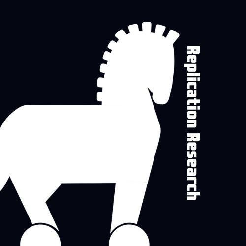

Research
My research covers Replications, Meta-Science, and Judgment and Decision Making (e.g., Anchoring Effects).

Together with an interdisciplinary team of Open Science experts, I am creating a publication platform for replication research. Get in touch if you seek for ways to publish replication research or if you want to help making replications mainstream.
Open educational resources
I have been writing a German book on Open Science, which is available online.
I upload most slides and materials from my workshops, lectures, talks, and seminars to this OSF repository: https://osf.io/at29b/
Together with experts from the University of Münster’s psychology open science commission, I have been preparing an interdisciplinary guide to Open Science (German, WIP): https://lukasroeseler.github.io/MueCOS-Infomodule/
Research articles (table)
| Reference | OSF-Link | Preregistration | Pre-Print | Journal publication | Diamond Open Access? | Student collaboration? |
|---|---|---|---|---|---|---|
| Röseler, L., Bögler, H. L., Koßmann, L., Krueger, S., Bickenbach, S., Bühler, R., … Sing, J. (in press). Replicating Epley and Gilovich: Need for Cognition, Cognitive Load, and Forewarning do not Moderate Anchoring Effects. Journal of Comments and Replications in Economics. https://doi.org/10.31234/osf.io/bgp3m | yes | yes | ||||
| Röseler, L., Weber, L., Stich, E., Helgerth, K., Günther, M., Wagner, F.-S., & Schütz, A. (in press). Measurements of Susceptibility to Anchoring are Unreliable: Meta-Analytic Evidence From More Than 50,000 Anchored Estimates. Meta Psychology. https://doi.org/10.31234/osf.io/b6t35 | yes | |||||
| Röseler, L., Kaiser, L., Doetsch, C., Klett, N., Seida, C., Schütz, A., Aczel, B., Adelina, N., Agostini, V., Alarie, S., Albayrak-Aydemir, N., Aldoh, A., Al-Hoorie, A. H., Azevedo, F., Baker, B. J., Barth, C. L., Beitner, J., Brick, C., Brohmer, H., Chandrashekar, S. P., Chung, K. L., Cockcroft, J. P., Cummins, J., Diveica, V., Dumbalska, T., Efendic, E., Elsherif, M., Evans, T., Feldman, G., Fillon, A., Förster, N., Frese, J., Genschow, O., Giannouli, V., Gjoneska, B., Gnambs, T., Gourdon-Kanhukamwe, A., Graham, C. J., Hartmann, H., Haviva, C., Herderich, A., Hilbert, L. P., Holgado, D., Hussey, I., Ilchovska, Z. G., Kalandadze, T., Karhulahti, V.-M., Kasseckert, L., Klingelhöfer-Jens, M., Koppold, A., Korbmacher, M., Kulke, L., Kuper, N., LaPlume, A., Leech, G., Lohkamp, F., Lou, N. M., Lynott, D., Maier, M., Meier, M., Montefinese, M., Moreau, D., Mrkva, K., Nemcova, M., Oomen, D., Packheiser, J., Pandey, S., Papenmeier, F., Paruzel-Czachura, M., Pavlov, Y. G., Pavlović, Z., Pennington, C. R., Pittelkow, M.-M., Plomp, W., Plonski, P. E., Pronizius, E., Pua, A. A., Pypno-Blajda, K., Rausch, M., Rebholz, T. R., Richert, E., Röer, J. P., Ross, R., Schmidt, K., Skvortsova, A., Sperl, M. F. J., Tan, A. W. M., Thürmer, J. L., Tołopiło, A., Vanpaemel, W., Vaughn, L. A., Verheyen, S., Wallrich, L., Weber, L., Wolska, J. K., Zaneva, M., & Zhang, Y. (2024). The Replication Database: Documenting the Replicability of Psychological Science. Journal of Open Psychology Data, 12: 8, pp. 1–23. DOI: https://doi.org/10.5334/jopd.101 |
yes | |||||
| Röseler, L., Felser, G., Asberger, J., & Schütz, A. (2024). The Effect of Variety on Perceived Quantity: Failures to Replicate Redden and Hoch (2009). Meta-Psychology, 8. https://doi.org/10.15626/MP.2020.2639 | ||||||
| Röseler, L., Weber, L., Helgerth, K., Stich, E., Günther, M., Tegethoff, P., Wagner, F. S., Ambrus, E., Antunovic, M., Barrera-Lemarchand, F., Halali, E., Ioannidis, K., Genschow, O., McKay, R., Milstein, N., Molden, D. C., Papenmeier, F., Pavlovic, Z., Rinn, R., Schreiter, M. L., Zimdahl, M. F., Allen, E., Bahník, Š., Bermeitinger, C., Blower, F. B. N., Bögler, H. L., Burgmer, P., Cheek, N. N., Dorsch, L., Fels, S. A., Frech, M.-L., Freira, L., Harris, A. J. L., Hartig, B., Häusser, J. A., Hedgebeth, M. V., Henkel, M., Horvath, D., Imhoff, R., Intelmann, P., Klamar, A., Knappe, E., Köppel, L.-M., Krueger, S. M., Lagator, S., López Bóo, F., Navajas, J., Norem, J. K., Novak, J., Onuki, Y., Page, E., Pearton, J., Ponader, S., Rebholz, T. R., Rostekova, A., Sartorio, M., Schindler, S., Seida, C., Shanks, D. R., Siems, M.-C., Speekenbrink, M., Stäglich, P., Starkulla, M., Stitz, M., Straube, T., Thies, K., Thum, E., Ueda, K., Undorf, M., Urlichich, D., Vadillo, M. A., Wolf, H., Zhou, A., & Schütz, A. (2024). Correction: The Open Anchoring Quest Dataset: Anchored Estimates from 96 Studies on Anchoring Effects. Journal of Open Psychology Data, 12: 8, pp. 1–3. https://doi.org/10.5334/jopd.92 | yes | |||||
| Adler, S. J., Röseler, L., & Schöniger, M. K. (2023). A toolbox to evaluate the trustworthiness of published findings. Journal of Business Research, 167, 114189. https://doi.org/10.1016/j.jbusres.2023.114189 | ||||||
| Röseler, L., Weber, L., Helgerth, K., Stich, E., Günther, M., Tegethoff, P., Wagner, F., Antunovic, M., BarreraLemarchand, F., Halali, E., Ioannidis, K., Genschow, O., Milstein, N., Molden, D. C., Papenmeier, F., Pavlovic, Z., Rinn, R., Schreiter, M. L., Zimdahl, M. F., Bahník, Š., Bermeitinger, C., Blower, F. B. N., Bögler, H. L., Burgmer, P., Cheek, N. N., Dorsch, L., Fels, S., Frech, M.-L., Freira, L., Harris, A. J. L., Häusser, J. A., Hedgebeth, M. V., Henkel, M., Horvath, D., Intelmann, P., Klamar, A., Knappe, E., Köppel, L.-M., Krueger, S. M., Lagator, S., Lopez-Boo, F., Navajas, J., Norem, J. K., Novak, J., Onuki, Y., Page, E., Rebholz, T. R., Sartorio, M., Schindler, S., Shanks, D. R., Siems, M.-C., Stäglich, P., Starkulla, M., Stitz, M., Straube, T., Thies, K., Thum, E., Ueda, K., Undorf, M., Urlichich, D., Vadillo, M. A., Wolf, H., Zhou, A., & Schütz, A. (2022). The Open Anchoring Quest Dataset: Anchored Estimates from 96 Studies on Anchoring Effects. Journal of Open Psychology Data, 10(16), pp. 1–12. http://doi.org/10.5334/jopd.67 | yes | |||||
| Delios, A., Clemente, E., Wu, T., Tan, H., Wang, Y., Gordon, M., Viganola, D., Chen, Z., Dreber, A., Johannesson, M., Pfeiffer, T., Generalizability Tests Forecasting Collaboration, & Uhlmann, E.L. (2022). Examining the context sensitivity of research findings from archival data. Proceedings of the National Academy of Sciences. https://doi.org/10.1073/pnas.212037711 | ||||||
| Körner*, R., Röseler*, L., Schütz, A., & Bushman, B. J. (2022). Dominance and prestige: Meta-analytic review of experimentally induced body position effects on behavioral, self-report, and physiological dependent variables.Psychological Bulletin, 148(1-2), 67–85. https://doi.org/10.1037/bul0000356 *shared first authorship | ||||||
| Wolf, D., Leder, J., Röseler, L., & Schütz, A. (2021). Does Facial Redness Really Affect Emotion Perception? Evidence for Limited Generalisability of Effects of Facial Redness on Emotion Perception in a Large Sample. Cognition and Emotion. 35(8), 1607–1617. https://doi.org/10.1080/02699931.2021.1979473 | ||||||
| Röseler, L., Schütz, A., Blank, P. A., Dück, M., Fels, S., Kupfer, J., Scheelje, L., & Seida, C. (2021). Evidence against subliminal anchoring: Two close, highly powered, preregistered, and failed replication attempts. Journal of Experimental Social Psychology, 92, 104066. https://doi.org/10.1016/j.jesp.2020.104066 | yes | |||||
| Röseler, L., Ebert, J., Schütz, A., & Baumeister, R. F. (2021). The upsides and downsides of high self-control: Evidence for effects of similarity and situation dependency. Europe’s Journal of Psychology, 17(1), 1–16. https://doi.org/10.5964/ejop.2639 | yes | |||||
| Körner, R., Röseler, L., & Schütz, A. (2021). Commentary on Elkjær et al.’s (2020) meta-analysis on expansive versus contractive nonverbal displays.Perspectives on Psychological Science, 17(1), 305–307. https://doi.org/10.1177/1745691620984474 | ||||||
| Tierney, W., Hardy, J. H., III., Ebersole, C., Viganola, D., Clemente, E., Gordon, M., Hoogeveen, S., Haaf, J., Dreber, A.A., Johannesson, M., Pfeiffer, T., Chapman, H., Gantman, A., Vanaman, M., DeMarree, K., Igou, E., Wylie, J., Storbeck J., Andreychik, M.R., McPhetres, J., Vaughn, L.A., … Röseler, L., …Uhlmann, E. L.(2021). A creative destruction approach to replication: Implicit work and sex morality across cultures. Journal of Experimental Social Psychology, 93, 104060. https://doi.org/10.1016/j.jesp.2020.104060 | ||||||
| Röseler, L., Schütz, A., Baumeister, R. F., & Starker, U. (2020). Does ego depletion reduce judgment adjustment for both internally and externally generated anchors? Journal of Experimental Social Psychology, 87, 103942. https://doi.org/10.1016/j.jesp.2019.103942 | ||||||
| Landy, J. F., Jia, M. L., Ding, I. L., Viganola, D., Tierney, W., Dreber, A., Johannesson, M., Pfeiffer, T., Ebersole, C. R., Gronau, Q. F., Ly, A., van den Bergh, D., Marsman, M., Derks, K., Wagenmakers, E.-J., Proctor, A., Bartels, D. M., Bauman, C. W., Brady, W. J.,... Röseler, L., … Uhlmann, E. L. (2020). Crowdsourcing hypothesis tests: Making transparent how design choices shape research results. Psychological Bulletin, 146(5), 451–479. https://doi.org/10.1037/bul0000220 | ||||||
| Röseler, L. (2020, September). Anchoring Effects: Resolving the Contradictions of Personality Moderator Research (Doctoral Thesis). University of Bamberg. https://osf.io/34sv6 | peer reviewed | |||||
| Röseler, L., Doetsch, C. A., Förster, N., Bruzsa, A., Deublein, M., Rieger, E., Schmidt, C., Seitz, A., &Wild, A. (2024). No Evidence for the Affective Expectation Model: Replication of Geers and Lassiter (2003). https://doi.org/10.31234/osf.io/akfzh | yes | |||||
| Röseler, L. (2024). Exploring Categorical Colors. https://doi.org/10.31234/osf.io/gj76p | ||||||
| Röseler, L., & Schütz, A. (2024). Assimilation and Contrast are Everywhere. https://doi.org/10.31234/osf.io/krwcn | ||||||
| Röseler, L. (2023). Predicting Replication Rates with Z-Curve: A Brief Exploratory Validation Study Using the Replication Database. Advance online publication. https://osf.io/preprints/metaarxiv/ewb2t | ||||||
| Röseler, L., Incerti, L., Seida, C., Rebholz, T., Papenmeier, F. (2023). Falsifying the Insufficient Adjustment Model: No Evidence for Unidirectional Adjustment From Anchors. Advance online publication. https://osf.io/8cwpy | yes | |||||
| Röseler, L., Gendlina, T., Krapp, J., Labusch, N., & Schütz, A. (2022). Successes and Failures of Replications: A Meta-Analysis of Independent Replication Studies Based on the OSF Registries. Advance online publication. https://doi.org/10.31222/osf.io/8psw2 | yes | |||||
| Weber, L., & Röseler, L. (2022). Testing the Reliability of Anchoring Susceptibility Scores. Advance online publication. https://doi.org/10.31234/osf.io/2kfh3 | yes | |||||
| Wolf, D., Röseler, L., Leder, J., & Schütz, A. (2022). The Red-Anger Effect: Is it Nothing More Than Demand Characteristics? Advance online publication. https://doi.org/10.31234/osf.io/ntukz | ||||||
| Röseler, L., & Schütz, A. (2022). Hanging the Anchor Off a New Ship: A Meta-Analysis of Anchoring Effects. https://doi.org/10.31234/osf.io/wf2tn | ||||||
| Röseler, L., Schütz, A. (2021). What You Expect is What You Get: The Role of Affective Expectations in Real-World Experiences. https://doi.org/10.31219/osf.io/2tr6q | ||||||
| Röseler, L., Schütz, A., Dolling, I. K., Friedinger, K., Hösch, Y., Hügel, J. C., Igna, E., Karg, A., Kühling, S., Schäffer, D., Zhou, A., & Röseler, J. J. (2020). The Stepwise Anchoring Paradigm: Measuring Reliable Components of Anchoring and Adjustment as the Next Step in Moderator Research. https://doi.org/10.31234/osf.io/hjbwp | yes | |||||
| Röseler, L., Wolf, D., Leder, J., & Schütz, A. (2020). Test-Retest Reliability is not a Measure of Reliability or Stability: A Friendly Reminder. https://doi.org/10.31234/osf.io/mt49r | ||||||
| Röseler, L., Schütz, A., & Starker, U. (2019). Cognitive Ability does not and cannot Correlate with Susceptibility to Anchoring Effects. https://doi.org/10.31234/osf.io/bnsx2 |
Research articles (peer-reviewed)
Röseler, L., Bögler, H. L., Koßmann, L., Krueger, S., Bickenbach, S., Bühler, R., … Sing, J. (in press). Replicating Epley and Gilovich: Need for Cognition, Cognitive Load, and Forewarning do not Moderate Anchoring Effects. Journal of Comments and Replications in Economics. https://doi.org/10.31234/osf.io/bgp3m
Röseler, L., Weber, L., Stich, E., Helgerth, K., Günther, M., Wagner, F.-S., & Schütz, A. (in press). Measurements of Susceptibility to Anchoring are Unreliable: Meta-Analytic Evidence From More Than 50,000 Anchored Estimates. Meta Psychology. https://doi.org/10.31234/osf.io/b6t35
Röseler, L., Kaiser, L., Doetsch, C., Klett, N., Seida, C., Schütz, A., Aczel, B., Adelina, N., Agostini, V., Alarie, S., Albayrak-Aydemir, N., Aldoh, A., Al-Hoorie, A. H., Azevedo, F., Baker, B. J., Barth, C. L., Beitner, J., Brick, C., Brohmer, H., Chandrashekar, S. P., Chung, K. L., Cockcroft, J. P., Cummins, J., Diveica, V., Dumbalska, T., Efendic, E., Elsherif, M., Evans, T., Feldman, G., Fillon, A., Förster, N., Frese, J., Genschow, O., Giannouli, V., Gjoneska, B., Gnambs, T., Gourdon-Kanhukamwe, A., Graham, C. J., Hartmann, H., Haviva, C., Herderich, A., Hilbert, L. P., Holgado, D., Hussey, I., Ilchovska, Z. G., Kalandadze, T., Karhulahti, V.-M., Kasseckert, L., Klingelhöfer-Jens, M., Koppold, A., Korbmacher, M., Kulke, L., Kuper, N., LaPlume, A., Leech, G., Lohkamp, F., Lou, N. M., Lynott, D., Maier, M., Meier, M., Montefinese, M., Moreau, D., Mrkva, K., Nemcova, M., Oomen, D., Packheiser, J., Pandey, S., Papenmeier, F., Paruzel-Czachura, M., Pavlov, Y. G., Pavlović, Z., Pennington, C. R., Pittelkow, M.-M., Plomp, W., Plonski, P. E., Pronizius, E., Pua, A. A., Pypno-Blajda, K., Rausch, M., Rebholz, T. R., Richert, E., Röer, J. P., Ross, R., Schmidt, K., Skvortsova, A., Sperl, M. F. J., Tan, A. W. M., Thürmer, J. L., Tołopiło, A., Vanpaemel, W., Vaughn, L. A., Verheyen, S., Wallrich, L., Weber, L., Wolska, J. K., Zaneva, M., & Zhang, Y. (2024). The Replication Database: Documenting the Replicability of Psychological Science.
Journal of Open Psychology Data, 12: 8, pp. 1–23. DOI: https://doi.org/10.5334/jopd.101Röseler, L., Felser, G., Asberger, J., & Schütz, A. (2024). The Effect of Variety on Perceived Quantity: Failures to Replicate Redden and Hoch (2009). Meta-Psychology, 8. https://doi.org/10.15626/MP.2020.2639
Röseler, L., Weber, L., Helgerth, K., Stich, E., Günther, M., Tegethoff, P., Wagner, F. S., Ambrus, E., Antunovic, M., Barrera-Lemarchand, F., Halali, E., Ioannidis, K., Genschow, O., McKay, R., Milstein, N., Molden, D. C., Papenmeier, F., Pavlovic, Z., Rinn, R., Schreiter, M. L., Zimdahl, M. F., Allen, E., Bahník, Š., Bermeitinger, C., Blower, F. B. N., Bögler, H. L., Burgmer, P., Cheek, N. N., Dorsch, L., Fels, S. A., Frech, M.-L., Freira, L., Harris, A. J. L., Hartig, B., Häusser, J. A., Hedgebeth, M. V., Henkel, M., Horvath, D., Imhoff, R., Intelmann, P., Klamar, A., Knappe, E., Köppel, L.-M., Krueger, S. M., Lagator, S., López Bóo, F., Navajas, J., Norem, J. K., Novak, J., Onuki, Y., Page, E., Pearton, J., Ponader, S., Rebholz, T. R., Rostekova, A., Sartorio, M., Schindler, S., Seida, C., Shanks, D. R., Siems, M.-C., Speekenbrink, M., Stäglich, P., Starkulla, M., Stitz, M., Straube, T., Thies, K., Thum, E., Ueda, K., Undorf, M., Urlichich, D., Vadillo, M. A., Wolf, H., Zhou, A., & Schütz, A. (2024). Correction: The Open Anchoring Quest Dataset: Anchored Estimates from 96 Studies on Anchoring Effects. Journal of Open Psychology Data, 12: 8, pp. 1–3. https://doi.org/10.5334/jopd.92
Adler, S. J., Röseler, L., & Schöniger, M. K. (2023). A toolbox to evaluate the trustworthiness of published findings. Journal of Business Research, 167, 114189. https://doi.org/10.1016/j.jbusres.2023.114189
Röseler, L., Weber, L., Helgerth, K., Stich, E., Günther, M., Tegethoff, P., Wagner, F., Antunovic, M., BarreraLemarchand, F., Halali, E., Ioannidis, K., Genschow, O., Milstein, N., Molden, D. C., Papenmeier, F., Pavlovic, Z., Rinn, R., Schreiter, M. L., Zimdahl, M. F., Bahník, Š., Bermeitinger, C., Blower, F. B. N., Bögler, H. L., Burgmer, P., Cheek, N. N., Dorsch, L., Fels, S., Frech, M.-L., Freira, L., Harris, A. J. L., Häusser, J. A., Hedgebeth, M. V., Henkel, M., Horvath, D., Intelmann, P., Klamar, A., Knappe, E., Köppel, L.-M., Krueger, S. M., Lagator, S., Lopez-Boo, F., Navajas, J., Norem, J. K., Novak, J., Onuki, Y., Page, E., Rebholz, T. R., Sartorio, M., Schindler, S., Shanks, D. R., Siems, M.-C., Stäglich, P., Starkulla, M., Stitz, M., Straube, T., Thies, K., Thum, E., Ueda, K., Undorf, M., Urlichich, D., Vadillo, M. A., Wolf, H., Zhou, A., & Schütz, A. (2022). The Open Anchoring Quest Dataset: Anchored Estimates from 96 Studies on Anchoring Effects. Journal of Open Psychology Data, 10(16), pp. 1–12. http://doi.org/10.5334/jopd.67
Delios, A., Clemente, E., Wu, T., Tan, H., Wang, Y., Gordon, M., Viganola, D., Chen, Z., Dreber, A., Johannesson, M., Pfeiffer, T., Generalizability Tests Forecasting Collaboration, & Uhlmann, E.L. (2022). Examining the context sensitivity of research findings from archival data. Proceedings of the National Academy of Sciences. https://doi.org/10.1073/pnas.212037711
Körner*, R., Röseler*, L., Schütz, A., & Bushman, B. J. (2022). Dominance and prestige: Meta-analytic review of experimentally induced body position effects on behavioral, self-report, and physiological dependent variables.Psychological Bulletin, 148(1-2), 67–85. https://doi.org/10.1037/bul0000356 *shared first authorship
Wolf, D., Leder, J., Röseler, L., & Schütz, A. (2021). Does Facial Redness Really Affect Emotion Perception? Evidence for Limited Generalisability of Effects of Facial Redness on Emotion Perception in a Large Sample. Cognition and Emotion. 35(8), 1607–1617. https://doi.org/10.1080/02699931.2021.1979473
Röseler, L., Schütz, A., Blank, P. A., Dück, M., Fels, S., Kupfer, J., Scheelje, L., & Seida, C. (2021). Evidence against subliminal anchoring: Two close, highly powered, preregistered, and failed replication attempts. Journal of Experimental Social Psychology, 92, 104066. https://doi.org/10.1016/j.jesp.2020.104066
Röseler, L., Ebert, J., Schütz, A., & Baumeister, R. F. (2021). The upsides and downsides of high self-control: Evidence for effects of similarity and situation dependency. Europe’s Journal of Psychology, 17(1), 1–16. https://doi.org/10.5964/ejop.2639
Körner, R., Röseler, L., & Schütz, A. (2021). Commentary on Elkjær et al.’s (2020) meta-analysis on expansive versus contractive nonverbal displays.Perspectives on Psychological Science, 17(1), 305–307. https://doi.org/10.1177/1745691620984474
Tierney, W., Hardy, J. H., III., Ebersole, C., Viganola, D., Clemente, E., Gordon, M., Hoogeveen, S., Haaf, J., Dreber, A.A., Johannesson, M., Pfeiffer, T., Chapman, H., Gantman, A., Vanaman, M., DeMarree, K., Igou, E., Wylie, J., Storbeck J., Andreychik, M.R., McPhetres, J., Vaughn, L.A., … Röseler, L., …Uhlmann, E. L.(2021). A creative destruction approach to replication: Implicit work and sex morality across cultures. Journal of Experimental Social Psychology, 93, 104060. https://doi.org/10.1016/j.jesp.2020.104060
Röseler, L., Schütz, A., Baumeister, R. F., & Starker, U. (2020). Does ego depletion reduce judgment adjustment for both internally and externally generated anchors? Journal of Experimental Social Psychology, 87, 103942. https://doi.org/10.1016/j.jesp.2019.103942
Landy, J. F., Jia, M. L., Ding, I. L., Viganola, D., Tierney, W., Dreber, A., Johannesson, M., Pfeiffer, T., Ebersole, C. R., Gronau, Q. F., Ly, A., van den Bergh, D., Marsman, M., Derks, K., Wagenmakers, E.-J., Proctor, A., Bartels, D. M., Bauman, C. W., Brady, W. J.,... Röseler, L., … Uhlmann, E. L. (2020). Crowdsourcing hypothesis tests: Making transparent how design choices shape research results. Psychological Bulletin, 146(5), 451–479. https://doi.org/10.1037/bul0000220
Röseler, L. (2020, September). Anchoring Effects: Resolving the Contradictions of Personality Moderator Research (Doctoral Thesis). University of Bamberg. https://osf.io/34sv6
Research articles (pre-prints)
Röseler, L., Doetsch, C. A., Förster, N., Bruzsa, A., Deublein, M., Rieger, E., Schmidt, C., Seitz, A., &Wild, A. (2024). No Evidence for the Affective Expectation Model: Replication of Geers and Lassiter (2003). https://doi.org/10.31234/osf.io/akfzh
Röseler, L. (2024). Exploring Categorical Colors. https://doi.org/10.31234/osf.io/gj76p
Röseler, L., & Schütz, A. (2024). Assimilation and Contrast are Everywhere. https://doi.org/10.31234/osf.io/krwcn
Röseler, L. (2023). Predicting Replication Rates with Z-Curve: A Brief Exploratory Validation Study Using the Replication Database. Advance online publication. https://osf.io/preprints/metaarxiv/ewb2t
Röseler, L., Incerti, L., Seida, C., Rebholz, T., Papenmeier, F. (2023). Falsifying the Insufficient Adjustment Model: No Evidence for Unidirectional Adjustment From Anchors. Advance online publication. https://osf.io/8cwpy
Röseler, L., Gendlina, T., Krapp, J., Labusch, N., & Schütz, A. (2022). Successes and Failures of Replications: A Meta-Analysis of Independent Replication Studies Based on the OSF Registries. Advance online publication. https://doi.org/10.31222/osf.io/8psw2
Weber, L., & Röseler, L. (2022). Testing the Reliability of Anchoring Susceptibility Scores. Advance online publication. https://doi.org/10.31234/osf.io/2kfh3
Wolf, D., Röseler, L., Leder, J., & Schütz, A. (2022). The Red-Anger Effect: Is it Nothing More Than Demand Characteristics? Advance online publication. https://doi.org/10.31234/osf.io/ntukz
Röseler, L., & Schütz, A. (2022). Hanging the Anchor Off a New Ship: A Meta-Analysis of Anchoring Effects. https://doi.org/10.31234/osf.io/wf2tn
Röseler, L., Schütz, A. (2021). What You Expect is What You Get: The Role of Affective Expectations in Real-World Experiences. https://doi.org/10.31219/osf.io/2tr6q
Röseler, L., Schütz, A., Dolling, I. K., Friedinger, K., Hösch, Y., Hügel, J. C., Igna, E., Karg, A., Kühling, S., Schäffer, D., Zhou, A., & Röseler, J. J. (2020). The Stepwise Anchoring Paradigm: Measuring Reliable Components of Anchoring and Adjustment as the Next Step in Moderator Research. https://doi.org/10.31234/osf.io/hjbwp
Röseler, L., Wolf, D., Leder, J., & Schütz, A. (2020). Test-Retest Reliability is not a Measure of Reliability or Stability: A Friendly Reminder. https://doi.org/10.31234/osf.io/mt49r
Röseler, L., Schütz, A., & Starker, U. (2019). Cognitive Ability does not and cannot Correlate with Susceptibility to Anchoring Effects. https://doi.org/10.31234/osf.io/bnsx2
Books and book chapters
Röseler, L. (in preparation). Open Science: Wie sich die Wissenschaft öffnet (0.1th ed.). https://doi.org/10.17605/OSF.IO/2QXWV
Jané, M., Xiao, Q., Yeung, S., Ben-Shachar, M. S., Caldwell, A., Cousineau, D., ... Röseler, L., … & Feldman, G. (2024). Guide to Effect Sizes and Confidence Intervals. http://dx.doi.org/10.17605/OSF.IO/D8C4G
Röseler, L., & Schütz, A. (2022). Open Science. In A. Schütz, M. Brand, S. Steins-Loeber, (Eds.), Psychologie: Eine Einführung in ihre Grundlagen und Anwendungsfelder (6th ed., pp. 187–198). Kohlhammer.
Software
Röseler, L., Wallrich, L. (2024). FReD: Interfaces to the FORRT Replication Database. R package version 0.0.0.9001, http://forrt.org/FReD/.
Röseler, L., Kaiser, L., Doetsch, C., Weber, L., Klett, N., Krapp, J., Seida, C., Schütz, A., Barth, C., Cummins, J., Dienlin, T., Elsherif, M., Förster, N., Genschow, O., Gnambs, T., Hartmann, H., Hilbert, L., Holgado, D., Hussey, I., Korbmacher, M., Kulke, L., Liu, Y., Lohkamp, F., Lou, N., Oomen, D., Papenmeier, F., Paruzel-Czachura, M., Pavlov, Y., Pavlović, Z., Pypno, K., Rausch, M., Rebholz, T., Ross, R., Sperl, M., Thürmer, L., Vaughn, L., Zaneva, M. (2024).ReD: Replication Database, Version 0.4.22.https://dx.doi.org/10.17605/OSF.IO/9r62x
Röseler, L., Weber, L., Stich, E., Günther, M., Helgerth, K. A. C., Wagner, F. S., Antunovic, M., Bahník, S., Barrera, F., Baumeister, R. F., Bermeitinger, C., Bickenbach, S. L. C., Blank, P. A., Blower, F. B. N., Bögler, H. L., Boo, F. L., Boruchowicz, C., Bühler, R. L., Burgmer, P., Cheek, N., N., Dohle, S., Dorsch, L., Dück, M. S., Halali, E.., Fels, S.-A., Fischer, A. L., Frech, M.-L., Freira, L., Friedinger, K., Genschow, O., Harris, A., Häusser, J. A., Hedgebeth, M., Henkel, M., Horvath, D., Hügel, J. C., Igna, E. L. E., Imhoff, R., Intelmann, P., Ioannidis, K., Karg, A. H., Klamar, A., Klein, C., Klusmann, B., Knappe, E., Köppel, L.-M., Koßmann, L., Kraft, P., Kroworsch, M. K., Krueger, S. M., Kühling, S., Lagator, S., Lammers, J., Loschelder, D. D., Milstein, N., Molden, D. C., Navajas, J., Norem, J., K., Novak, J. Onuki, Y., Page, E., Panse, F., Papenmeier, F., Pavlovic, Z., Rebholz, T. R., Rinn, R., Rodgers, S., Röseler, J. J., Roßmaier, K. V., Sartorio, M., Scheelje, L., Schindler, S., Schreiner, N. B., Schreiter, M. L., Seida, C., Shanks, D. R., Siems, M.-C., Stitz, M., Starkulla, M., Stäglich, M., Thies, K., Thum, E., Undorf, M., Unger, B. D., Urlichich, D., Vadillo, M. A., Wackershauser-Sablotny, V., Wagner, F. S., Wessel, I., Wolf, H., Zhou, A., Zimdahl, M., & Schütz, A. (2022). OpAQ: Open Anchoring Quest, Version 1.1.42.94. https://dx.doi.org/10.17605/OSF.IO/YGNVB. Available online at https://metaanalyses.shinyapps.io/OpAQ/.
Röseler, L., Adler, S., Schöniger, M. (2022). A Toolbox to Identify P-Hacking. Version 0.0.5. Available online at https://metaanalyses.shinyapps.io/toolbox/.
Röseler, L., Körner, R., & Schütz, A. (2021). Dynamic Meta-Analysis of Body Position Effects ShinyApp. Available online at https://metaanalyses.shinyapps.io/bodypositions/.
Röseler, L., Röseler, J. J. (2020). Studienfeedback ShinyApp. Available online at https://l-air.shinyapps.io/feedback/.
Research proposals
This is a selection of research proposals that I created alone or together with other researchers.
| Proposal | Role | Program and Funder | Link | Status |
|---|---|---|---|---|
| Moderators of Anchoring Effects | First author | DFG, Sachbeihilfe | https://osf.io/x6bqh/ | rejected |
| Formation of a Replication Journal | First author | Topical Program, University of Münster | https://osf.io/9vgx7/ | under review |
| Expanding the Replication Database | First author | Ideenlabor, University of Münster | https://osf.io/854vt/ | rejected |
| Expanding the FORRT Replication Database | Second author | DFG, Meta-REP Priority Program | rejected |